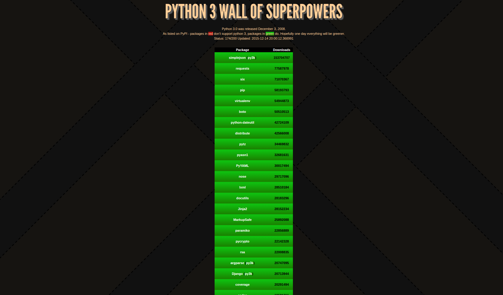

Created: 2016-05-26 Thu 11:18
“Python 2 is the next COBOL.”
-Alex Gaynor, at PyCon AU 2013

It all started with a pair of quotes
-Anonymous
☃ 💩
Python2:
Python3:
Python 2:
In [5]: type('hello') Out[5]: str In [6]: type(u'hello') Out[6]: unicode In [7]: 'hello' == u'hello' Out[7]: True
Python 3:
In [19]: type(u'hello') Out[19]: str In [20]: type('hello') Out[20]: str In [21]: u'hello' == 'hello' Out[21]: True
Python2:
>>> a, b = range(2) >>> a 0 >>> b 1
Python 3
>>> a, b, *rest = range(10) >>> a 0 >>> b 1 >>> rest [2, 3, 4, 5, 6, 7, 8, 9]
Defined as:
def f(a, b, *args, option=True):
Can only be called as f(a, b, option=True)
You can write just a * if you don't want to collect *args.
def sum(a, b, *, biteme=False): if biteme: shutil.rmtree('/') else: return a + b >>> sum(1, 2, 3) Traceback (most recent call last): File "<stdin>", line 1, in <module> TypeError: sum() takes 2 positional arguments but 3 were given
def mycopy(source, dest): try: shutil.copy2(source, dest) except OSError: # We don't have permissions. More on this later raise NotImplementedError("automatic sudo injection")
>>> mycopy('noway', 'noway2') >>> mycopy(1, 2) Traceback (most recent call last): File "<stdin>", line 1, in <module> File "<stdin>", line 5, in mycopy NotImplementedError: automatic sudo injection
Original stacktrace is lost!
Python3
... File "/Users/aaronmeurer/anaconda3/lib/python3.3/shutil.py", line 109, in copyfile with open(src, 'rb') as fsrc: PermissionError: [Errno 13] Permission denied: 'noway' During handling of the above exception, another exception occurred: Traceback (most recent call last): File "<stdin>", line 1, in <module> File "<stdin>", line 5, in mycopy NotImplementedError: automatic sudo injection
Called manually as:
raise exception from e >>> raise NotImplementedError from OSError OSError The above exception was the direct cause of the following exception: Traceback (most recent call last): File "<stdin>", line 1, in <module> NotImplementedError
Python2:
import errno def mycopy(source, dest): try: shutil.copy2(source, dest) except OSError as e: if e.errno in [errno.EPERM, errno.EACCES]: raise NotImplementedError("automatic sudo injection") else: raise
Python3:
def mycopy(source, dest): try: shutil.copy2(source, dest) except PermissionError: raise NotImplementedError("automatic sudo injection")
are all iterators.
In [2]: d = {1: 2, 3: 4} In [3]: d.items() Out[3]: dict_items([(1, 2), (3, 4)]) In [4]: list(d.items()) Out[4]: [(1, 2), (3, 4)] In [5]: d.keys() Out[5]: dict_keys([1, 3])
Python 2:
>>> 'abc' > 123 True >>> None > all False
In Python 3 this does not work anymore:
>>> 'one' > 2 Traceback (most recent call last): File "<stdin>", line 1, in <module> TypeError: unorderable types: str() > int()
Python2
for i in gen(): yield i
Python3
yield from gen()
def get_list_values(lst): for item in lst: yield int(item) for item in lst: yield str(item) for item in lst: yield float(item)
Can be refactored as:
def get_list_values(lst): for sub in [get_list_values_as_int, get_list_values_as_str, get_list_values_as_float]: yield from sub(lst)
In [1]: def f(a: int, b: int) -> int: ...: return a + b ...: In [2]: f(1, 20) Out[2]: 21 In [3]: f.__annotations__ Out[3]: {'a': int, 'b': int, 'return': int}
Actualy type checking:
@typechecked def greet(name: str, age: int) -> str: print('Hello {0}, you are {1} years old'.format(name, age)) greet(1, 28) Traceback (most recent call last): ... TypeError: Incorrect type for "name"
import asyncio @asyncio.coroutine def my_coroutine(future, task_name, seconds_to_sleep=3): print('{0} sleeping for: {1} seconds'.format(task_name, seconds_to_sleep)) yield from asyncio.sleep(seconds_to_sleep) future.set_result('{0} is finished'.format(task_name)) def got_result(future): print(future.result()) loop = asyncio.get_event_loop() future1 = asyncio.Future() future2 = asyncio.Future() tasks = [ my_coroutine(future1, 'task1', 3), my_coroutine(future2, 'task2', 1)] future1.add_done_callback(got_result) future2.add_done_callback(got_result) loop.run_until_complete(asyncio.wait(tasks)) loop.close()
async def!
import asyncio import datetime async def display_date(loop): end_time = loop.time() + 5.0 while True: print(datetime.datetime.now()) if (loop.time() + 1.0) >= end_time: break await asyncio.sleep(1) loop = asyncio.get_event_loop() # Blocking call which returns when the display_date() coroutine is done loop.run_until_complete(display_date(loop)) loop.close()
from StringIO import StringIO if __name__ == '__main__': s = StringIO("Hello") print s.read()
2to3 original.py
from io import StringIO if __name__ == '__main__': s = StringIO("Hello") print(s.read())
import six if __name__ == '__main__': s = six.StringIO("Hello") print(s.read())
$ python2 using_six.py Hello $ python3 using_six.py Hello
futurize original.py
from __future__ import print_function from future import standard_library standard_library.install_aliases() from io import StringIO if __name__ == '__main__': s = StringIO("Hello") print(s.read())
Tox runs tests for many environments
[tox] envlist = py27,py34,py35 [testenv] deps= pytest -rrequirements.txt commands=py.test tests.py
import to_test def test_gen_io(): assert to_test.gen_io().read() == "Hello world"
import six def gen_io(): return six.StringIO("Hello world")